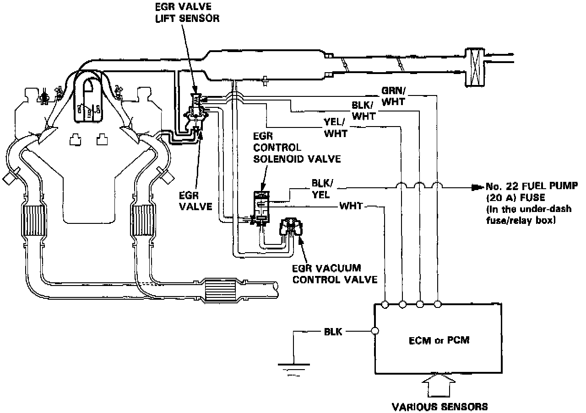

Exhaust Gas Recirculation: Description and Operation

DESCRIPTION
The EGR System is designed to reduce oxides of nitrogen emissions (NOx) by recirculating exhaust gas through the EGR valve and the intake manifold into the combustion chambers. It is composed of the EGR valve, FOR vacuum control valve, EGR control solenoid valve, ECM (Engine Control Module) or PCM (Powertrain Control Module) and various sensors.
OPERATION
The ECM or PCM memory contains ideal EGR valve lifts for varying operating conditions. The EGR valve lift sensor detects the amount of EGR valve lift and sends the information to the ECM or PCM. The ECM or PCM then compares it with the ideal EGR valve lift which is determined by signals sent from the other sensors. If there is any difference between the two, the ECM or PCM cuts current to the EGR control solenoid valve to reduce vacuum applied to the EGR valve.